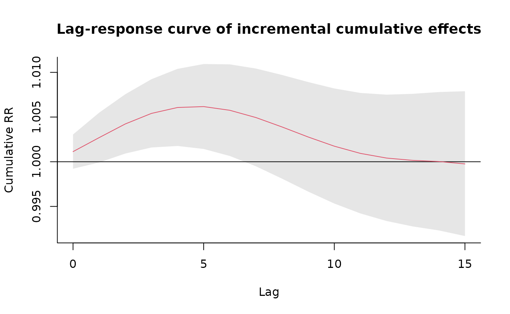
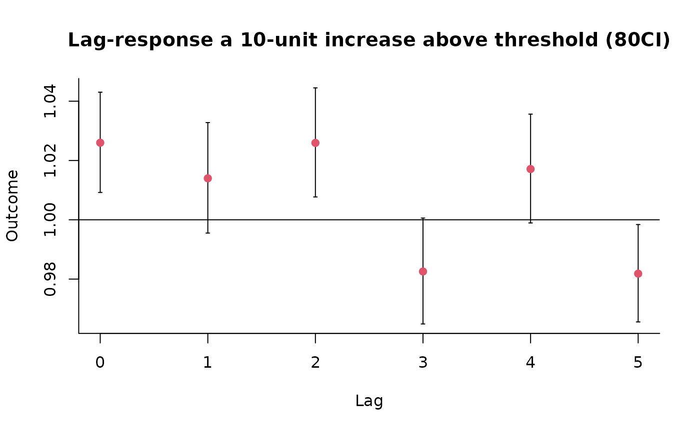
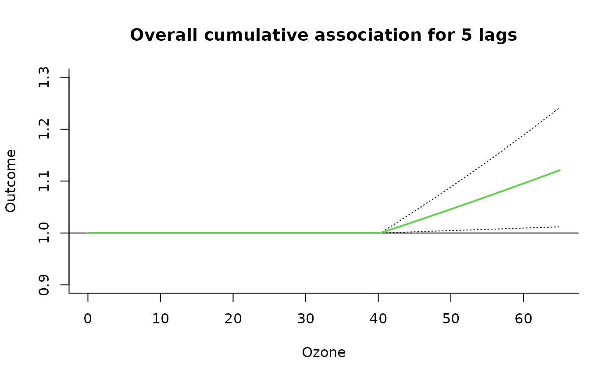
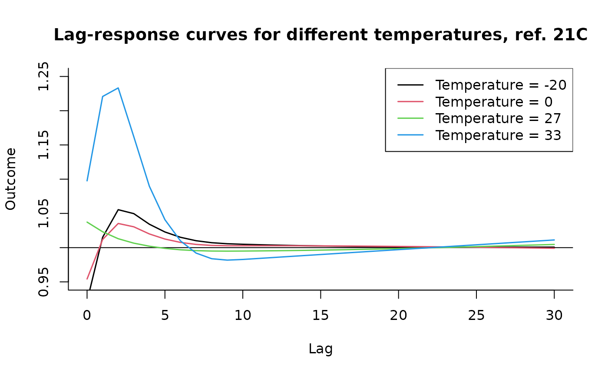
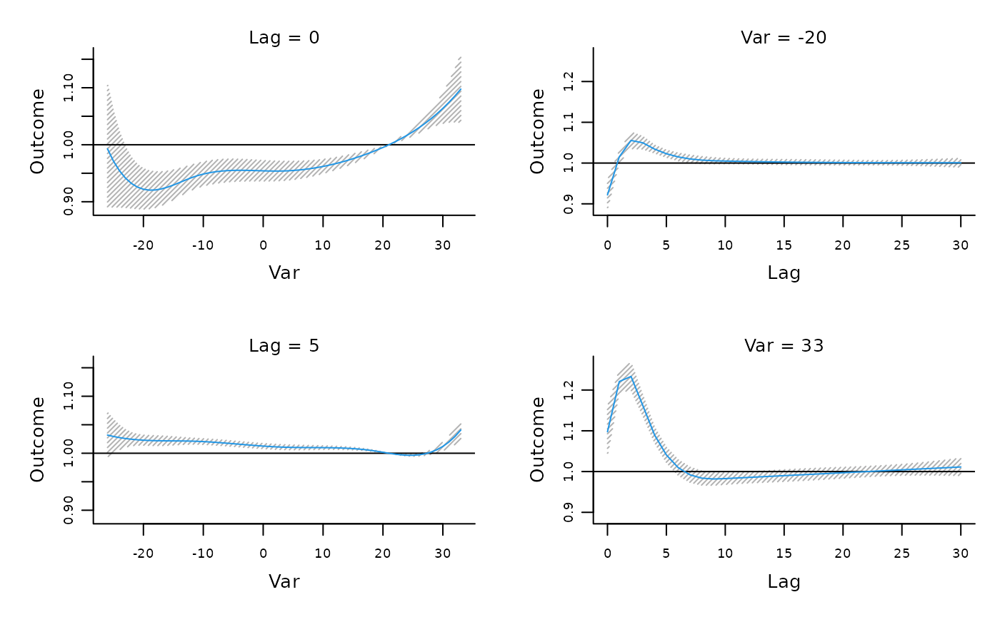
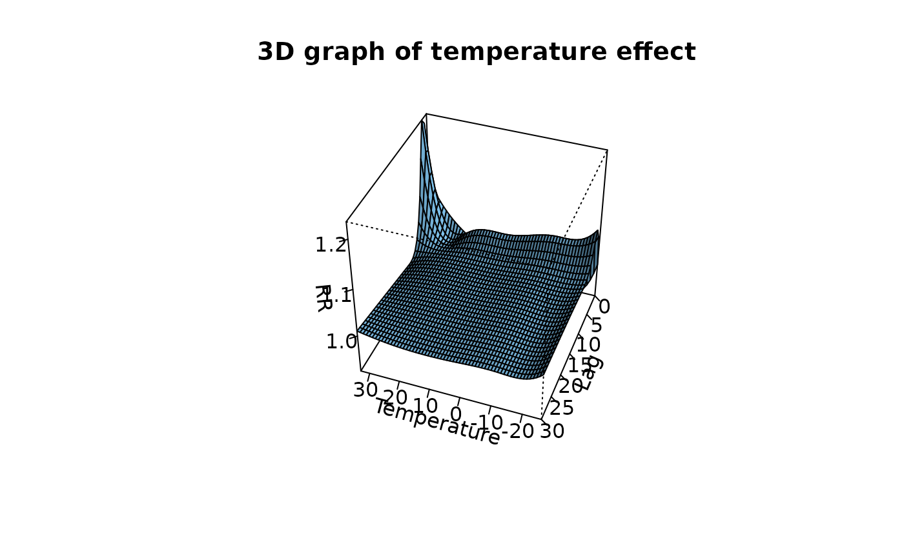
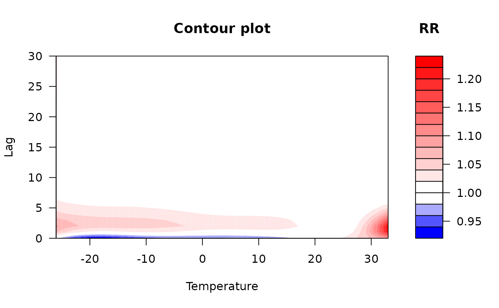

vignettes/dlmnTS.Rmd
dlmnTS.Rmd## This is dlnm 2.4.10. For details: help(dlnm) and vignette('dlnmOverview').
set.seed(13041975)
head(chicagoNMMAPS, 3)## date time year month doy dow death cvd resp temp dptp
## 1 1987-01-01 1 1987 1 1 Thursday 130 65 13 -0.2777778 31.500
## 2 1987-01-02 2 1987 1 2 Friday 150 73 14 0.5555556 29.875
## 3 1987-01-03 3 1987 1 3 Saturday 101 43 11 0.5555556 27.375
## rhum pm10 o3
## 1 95.50 26.95607 4.376079
## 2 88.25 NA 4.929803
## 3 89.50 32.83869 3.751079
cb1.pm <- crossbasis(chicagoNMMAPS$pm10, lag = 15,
argvar = list(fun = "lin"),
arglag = list(fun = "poly", degree = 4)
)
cb1.temp <- crossbasis(chicagoNMMAPS$temp, lag = 3,
argvar = list(df = 5),
arglag = list(fun = "strata", breaks = 1)
)
summary(cb1.pm)## CROSSBASIS FUNCTIONS
## observations: 5114
## range: -3.049835 to 356.1768
## lag period: 0 15
## total df: 5
##
## BASIS FOR VAR:
## fun: lin
## intercept: FALSE
##
## BASIS FOR LAG:
## fun: poly
## degree: 4
## scale: 15
## intercept: TRUE
summary(cb1.temp)## CROSSBASIS FUNCTIONS
## observations: 5114
## range: -26.66667 to 33.33333
## lag period: 0 3
## total df: 10
##
## BASIS FOR VAR:
## fun: ns
## knots: 0.2777778 6.666667 14.44444 20.94444
## intercept: FALSE
## Boundary.knots: -26.66667 33.33333
##
## BASIS FOR LAG:
## fun: strata
## df: 2
## breaks: 1
## ref: 1
## intercept: TRUE
library(splines)
model1 <- glm(death ~ cb1.pm + cb1.temp + ns(time, 7 * 14) + dow,
family = quasipoisson(), chicagoNMMAPS
)
pred1.pm <- crosspred(cb1.pm, model1, at = 0:20, bylag = 0.2, cumul = TRUE)
plot(pred1.pm, "slices",
var = 10, col = 3, ylab = "RR", ci.arg = list(density = 15, lwd = 2),
main = "Lag-response curve for a 10-unit increase in PM10"
)
plot(pred1.pm, "slices",
var = 10, col = 2, cumul = TRUE, ylab = "Cumulative RR",
main = "Lag-response curve of incremental cumulative effects"
)
### code chunk number 9: example1slicesnoeval (eval = FALSE)
## plot(pred1.pm, "slices", var=10, col=3, ylab="RR", ci.arg=list(density=15,lwd=2),
## main="Association with a 10-unit increase in PM10")
## plot(pred1.pm, "slices", var=10, col=2, cumul=TRUE, ylab="Cumulative RR",
## main="Cumulative association with a 10-unit increase in PM10")
pred1.pm$allRRfit["10"]## 10
## 0.9997563
cbind(pred1.pm$allRRlow, pred1.pm$allRRhigh)["10", ]## [1] 0.9916871 1.0078911
cb2.o3 <- crossbasis(chicagoNMMAPSseas$o3, lag = 5,
argvar = list(fun = "thr", thr = 40.3),
arglag = list(fun = "integer"),
group = chicagoNMMAPSseas$year
)
cb2.temp <- crossbasis(chicagoNMMAPSseas$temp, lag = 10,
argvar = list(fun = "thr", thr = c(15, 25)),
arglag = list(fun = "strata", breaks = c(2, 6)),
group = chicagoNMMAPSseas$year
)
### code chunk number 13: example2modelpred
model2 <- glm(death ~ cb2.o3 + cb2.temp + ns(doy, 4) + ns(time, 3) + dow,
family = quasipoisson(), chicagoNMMAPSseas
)
pred2.o3 <- crosspred(cb2.o3, model2, at = c(0:65, 40.3, 50.3))
### code chunk number 14: example2slices
plot(pred2.o3, "slices",
var = 50.3, ci = "bars", type = "p", col = 2, pch = 19,
ci.level = 0.80, main = "Lag-response a 10-unit increase above threshold (80CI)"
)
### code chunk number 15: example2overall
plot(pred2.o3, "overall",
xlab = "Ozone", ci = "l", col = 3, ylim = c(0.9, 1.3), lwd = 2,
ci.arg = list(col = 1, lty = 3), main = "Overall cumulative association for 5 lags"
)
### code chunk number 16: example2noeval1 (eval = FALSE)
## plot(pred2.o3, "slices", var=50.3, ci="bars", type="p", col=2, pch=19,
## ci.level=0.80, main="Lag-response a 10-unit increase above threshold (80CI)")
## plot(pred2.o3,"overall",xlab="Ozone", ci="l", col=3, ylim=c(0.9,1.3), lwd=2,
## ci.arg=list(col=1,lty=3), main="Overall cumulative association for 5 lags")
### code chunk number 17: example2effect
pred2.o3$allRRfit["50.3"]## 50.3
## 1.047313
cbind(pred2.o3$allRRlow, pred2.o3$allRRhigh)["50.3", ]## [1] 1.004775 1.091652
cb3.pm <- crossbasis(chicagoNMMAPS$pm10, lag = 1,
argvar = list(fun = "lin"),
arglag = list(fun = "strata")
)
varknots <- equalknots(chicagoNMMAPS$temp, fun = "bs", df = 5, degree = 2)
lagknots <- logknots(30, 3)
cb3.temp <- crossbasis(chicagoNMMAPS$temp, lag = 30, argvar = list(
fun = "bs",
knots = varknots
), arglag = list(knots = lagknots))
### code chunk number 19: example3noeval (eval = FALSE)
## model3 <- glm(death ~ cb3.pm + cb3.temp + ns(time, 7*14) + dow,
## family=quasipoisson(), chicagoNMMAPS)
## pred3.temp <- crosspred(cb3.temp, model3, cen=21, by=1)
## plot(pred3.temp, xlab="Temperature", zlab="RR", theta=200, phi=40, lphi=30,
## main="3D graph of temperature effect")
## plot(pred3.temp, "contour", xlab="Temperature", key.title=title("RR"),
## plot.title=title("Contour plot",xlab="Temperature",ylab="Lag"))
### code chunk number 20: example3plot3d
model3 <- glm(death ~ cb3.pm + cb3.temp + ns(time, 7 * 14) + dow,
family = quasipoisson(), chicagoNMMAPS
)
pred3.temp <- crosspred(cb3.temp, model3, cen = 21, by = 1)
plot(pred3.temp,
xlab = "Temperature", zlab = "RR", theta = 200, phi = 40, lphi = 30,
main = "3D graph of temperature effect"
)
### code chunk number 21: example3plotcontour
plot(pred3.temp, "contour",
xlab = "Temperature", key.title = title("RR"),
plot.title = title("Contour plot", xlab = "Temperature", ylab = "Lag")
)
### code chunk number 22: example3noeval2 (eval = FALSE)
## plot(pred3.temp, "slices", var=-20, ci="n", col=1, ylim=c(0.95,1.25), lwd=1.5,
## main="Lag-response curves for different temperatures, ref. 21C")
## for(i in 1:3) lines(pred3.temp, "slices", var=c(0,27,33)[i], col=i+1, lwd=1.5)
## legend("topright",paste("Temperature =",c(-20,0,27,33)), col=1:4, lwd=1.5)
## plot(pred3.temp, "slices", var=c(-20,33), lag=c(0,5), col=4,
## ci.arg=list(density=40,col=grey(0.7)))
### code chunk number 23: example3slices
plot(pred3.temp, "slices",
var = -20, ci = "n", col = 1, ylim = c(0.95, 1.25), lwd = 1.5,
main = "Lag-response curves for different temperatures, ref. 21C"
)
for (i in 1:3) lines(pred3.temp, "slices", var = c(0, 27, 33)[i], col = i + 1, lwd = 1.5)
legend("topright", paste("Temperature =", c(-20, 0, 27, 33)), col = 1:4, lwd = 1.5)
### code chunk number 24: example3slices2
plot(pred3.temp, "slices",
var = c(-20, 33), lag = c(0, 5), col = 4,
ci.arg = list(density = 40, col = grey(0.7))
)
cb4 <- crossbasis(chicagoNMMAPS$temp, lag = 30,
argvar = list(fun = "thr", thr = c(10, 25)),
arglag = list(knots = lagknots)
)
model4 <- glm(death ~ cb4 + ns(time, 7 * 14) + dow,
family = quasipoisson(), chicagoNMMAPS
)
pred4 <- crosspred(cb4, model4, by = 1)
### code chunk number 26: example4reduce
redall <- crossreduce(cb4, model4)
redlag <- crossreduce(cb4, model4, type = "lag", value = 5)
redvar <- crossreduce(cb4, model4, type = "var", value = 33)
### code chunk number 27: example4dim
length(coef(pred4))## [1] 10## [1] 2## [1] 2## [1] 5
### code chunk number 28: example4plotall
plot(pred4, "overall",
xlab = "Temperature", ylab = "RR",
ylim = c(0.8, 1.6), main = "Overall cumulative association"
)
lines(redall, ci = "lines", col = 4, lty = 2)
legend("top", c("Original", "Reduced"), col = c(2, 4), lty = 1:2, ins = 0.1)
### code chunk number 29: example4reconstr
b4 <- onebasis(0:30, knots = attributes(cb4)$arglag$knots, intercept = TRUE)
pred4b <- crosspred(b4, coef = coef(redvar), vcov = vcov(redvar), model.link = "log", by = 1)
### code chunk number 30: example4plotvar
plot(pred4, "slices",
var = 33, ylab = "RR", ylim = c(0.9, 1.2),
main = "Predictor-specific association at 33C"
)
lines(redvar, ci = "lines", col = 4, lty = 2)
points(pred4b, col = 1, pch = 19, cex = 0.6)
legend("top", c("Original", "Reduced", "Reconstructed"),
col = c(2, 4, 1), lty = c(1:2, NA),
pch = c(NA, NA, 19), pt.cex = 0.6, ins = 0.1
)